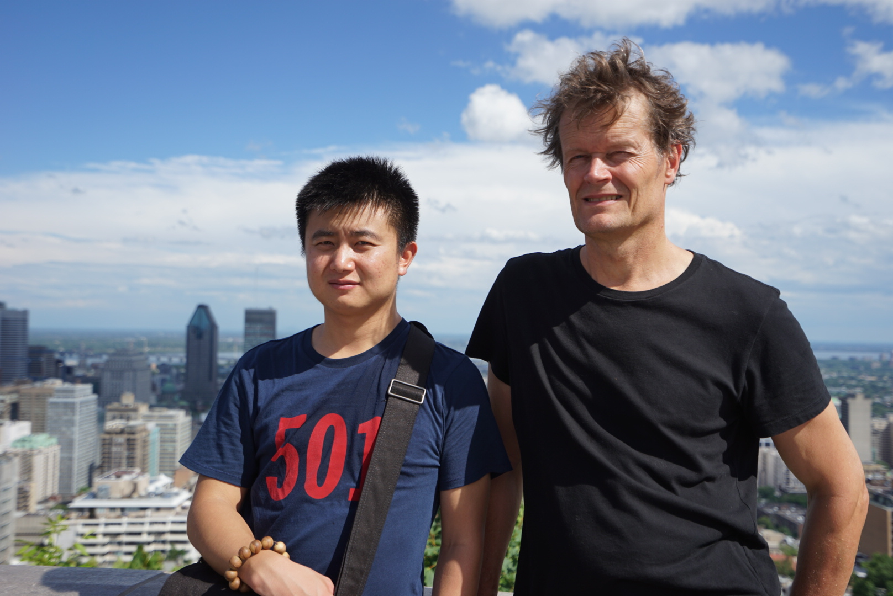
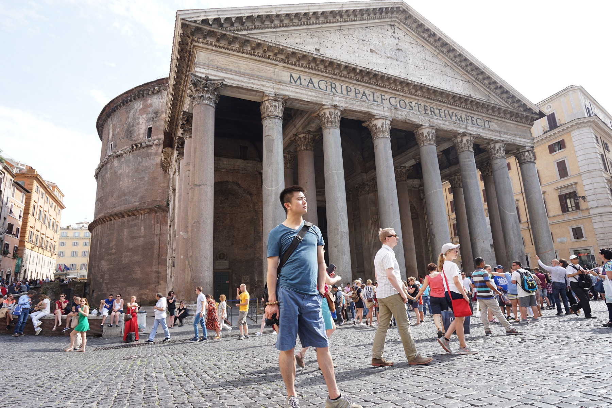
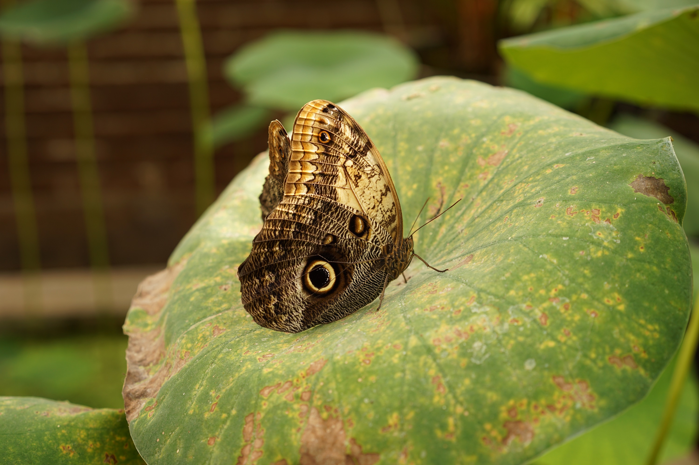

This is an updating list of photos of/by me (and with other people).
With Aad van der Vaart in Montréal, Canada in July 2016 Photo Courtesy: Taken by Maryse Loranger
In Rome, Italy in June 2016 Photo Courtesy: Taken by Chao Gao
In Leiden, The Netherlands in October 2015 Photo Courtesy: Take by me
Last Updated: 9 March 2017